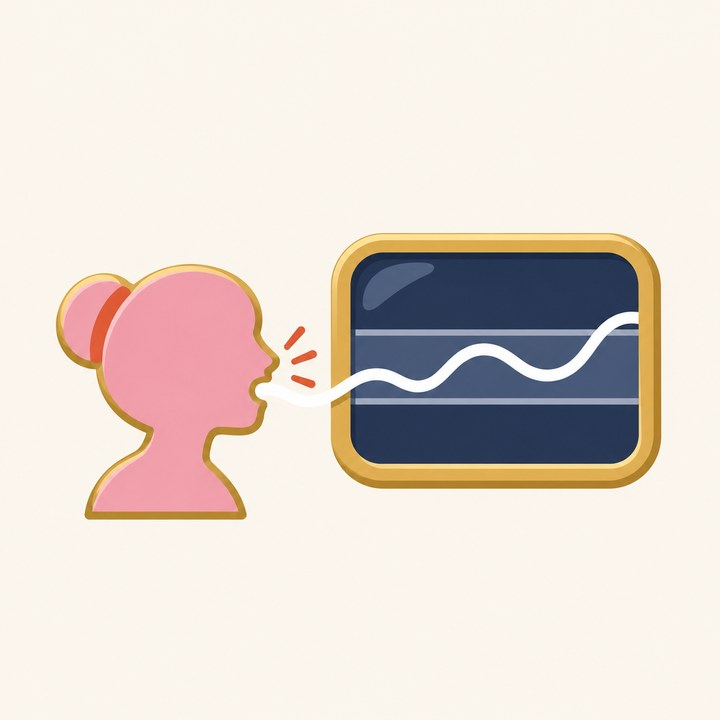

iPhone・iPad・Android のボイトレ
自分の声の高さを、
線で見る。
歌っている声の高さを、その場で線のグラフにします。ねらう音より高いか低いかがセントで分かり、録って聞き返すと声と線が一緒に動きます。声は端末の外に送りません。
App Store・Google Play で配信予定買い切りで全部の機能が使えます。アプリ内課金・サブスクリプション・広告はありません。

こんな困りごとのために
高いのか低いのか分からない
ねらう音の帯に線が入れば合っています。ずれはセントで。
低い声だと別の音に出る
C1 から測れます。倍音が強くても、オクターブを取り違えにくい取り方です。
聞き返すと音が小さい
聞き返しはスピーカーから。声と線が一緒に動きます。
判定が甘い
許し幅を ±10・25・50 セントから選べます。
音域が伸びたか知りたい
0.3 秒以上続いた音だけで音域を測り、日付ごとに残します。mid2C・hiA の書き方でも。
基準の音がほしい
鍵盤を押すと、音叉がわりの音が鳴ります。
できること
| 声の線 | C1〜C8・いまの音（C4／ド／mid2C）・セントのずれ |
|---|---|
| ねらう音 | 鍵盤で選ぶ・許し幅 ±10・25・50 セント・音叉の音 |
| 録音 | 録って聞き返す・声と線が一緒に動く・スピーカーから |
| 音域 | いちばん低い声と高い声・カラオケの書き方・日付ごとの記録 |
| データ | iCloud Drive の毎日の控え・アカウントなし・解析と広告なし・声は送らない |
使い方・プライバシーポリシー・利用規約もご覧ください。